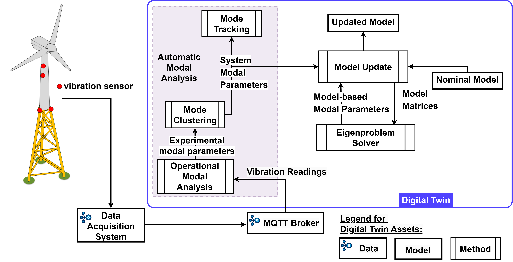

Structural Health Monitoring
Overview
This example demonstrates the use of digital twin methodology for structural health monitoring (SHM). A digital twin workflow shown below has been developed for the SHM use cases.

The complete source code for this example is available online.
Example Structure
This digital twin consists of
- SHM package: package implementing the digital twin workflow. This package also contains the recorded data from physical twin and replay functions that stream data into the digital twin workflow.
- replay.json: MQTT configuration file for replaying the recorded data
The package can demonstrate these experimental scenarios.
- replay replays the recorded readings from cantilever beam setup.
- acceleration_readings demonstrates the use of
Accelerometerclass to extract accelerometer measurements from MQTT data stream. -
aligning_readings demonstrates the use of
Alignerclass to collect and align accelerometer measurements from multiple MQTT data streams. -
sysid demonstrates the use of
sysidwith four cases:- sysid-and-plot: plots natural frequencies.
- sysid-and-print: prints sysid output to console.
- sysid-and-publish: publishes one set of sysid output via MQTT to the config given under [sysid] config.
- live-sysid-and-publish: Continuously publishes sysid output via MQTT to the config given under [sysid] config.
-
Clustering demonstrates the use of
clusteringwith three cases:- clustering-with-local-sysid: gets the sysid output by runing sysid locally, then runs the mode clustering.
- clustering-with-remote-sysid: gets sysid output by subscribing, then runs the mode clustering. This is a one time operation.
- live-clustering-with-remote-sysid: gets sysid output by subscribing, then runs the mode clustering. This operation runs in loop.
- live-clustering-with-remote-sysid-and-publish: gets sysid output by subscribing, then runs the mode clustering. The cluster results are published. This operation runs in loop.
-
mode-tracking demonstrates the use of
mode_trackingwith three cases:- mode-tracking-with-local-sysid: gets the sysid output by runing sysid locally, then runs mode clustering and mode tracking.
- mode-tracking-with-remote-sysid: gets sysid output by subscribing, then runs mode clustering and mode tracking. This is a one time operation.
- live-mode-tracking-with-remote-sysid: gets sysid output by subscribing, then runs mode clustering and mode tracking. This operation runs in loop.
-
model-update demonstrates the use of
model_updatewith two cases:- model-update-local-sysid: gets the sysid output, then uses it to run update model and get updated system parameters.
- live-model-update-with-remote-sysid: gets the sysid output by subscribing to MQTT topic, then runs mode clustering to run update model and get updated system parameters.
- live-model-update-with-remote-clustering: gets the mode clustering output by subscribing to MQTT topic, then uses the mode clustering output to run update model and get updated system parameters.
Of the above mentioned experimental scenarios, the following can be placed in the automated execution mode.
-
acceleration_readings demonstrates the use of
Accelerometerclass to extract accelerometer measurements from MQTT data stream. -
aligning_readings demonstrates the use of
Alignerclass to collect and align accelerometer measurements from multiple MQTT data streams. -
sysid demonstrates the use of
sysidwith four cases. It prints sysid output to console. -
Clustering demonstrates the use of
sysidandclustering. -
mode-tracking demonstrates the use of
sysidandmode_tracking. -
model-update demonstrates the use of the digital twin workflow upto
model_update.
Configuration
This example uses MQTT broker for replaying the recorded data from physical
twin. The format of the configuration file is in replay.json. MQTT credentials
need to be updated in the file. In case a local MQTT broker is not available,
test server can also be used.
Use
The available experimental scenarios can be found by running the program
Run these examples with the replay.json config:
Automated Execution
The current configuration of this example demonstrates system identification and model update. A truncated sample output can be seen here. The execution timestamps have been removed from this log to show the main content.
References
- This example corresponds to commit ce47244 of the example-shm repository.
- Talasila, P., Tcherniak, D., Jensen, A. M. D., Mahato, S., Schörghofer-Queiroz, A., Ulriksen, M. D., ... & Damkilde, L. (2025, July). Structural Health Monitoring of Engineering Structures Using Digital Twins: A Digital Twin Platform Approach. In International Conference on Experimental Vibration Analysis for Civil Engineering Structures (pp. 986-996). Cham: Springer Nature Switzerland.)